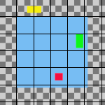

With the command, you can very precisely position the visible layers (those marked with the “eye” icon). This degree of precision is especially useful when you are working on animations, which typically have many small layers. Clicking on displays a dialog which allows you to choose how the layers should be aligned.
-
You can access this command from the main menu through → . There is no default keyboard shortcut.
![[Note]](images/note.png)
Note If the image holds a single layer only, you get a message from GIMP telling that there must be more than one layer in the image to execute the command.
The examples in the Description of the “Align Visible Layers” dialog section all use the same starting image. The image contains four layers. The order of those layers from top to bottom is as follows:
-
Green, vertical rectangle (top layer)
-
Yellow, horizontal rectangle
-
Red, small square
-
Blue, larger square (bottom layer)
The command aligns layers based on their boundaries. In the example image, each layer's boundary is adjusted to match the perimeter of the shape in that layer. For information about how to adjust a layer's boundary, see Layer Boundary Size. You can also use a command such as Crop Layers to Content to automatically adjust a layer's boundary.
|
|
Note |
|---|---|
|
In the examples, the Ignore the bottom layer even if visible checkbox is left checked. The bottom layer, which is the larger blue square, is then not affected by any of the alignment operations. |
- Horizontal style, Vertical style
-
These options control how the layers should be moved in relationship to each other. You can choose:
-
None: There will be no change in the horizontal or the vertical position, respectively.
-
Collect: The visible layers will be aligned on the canvas, in the way that is determined by the Horizontal base and Vertical base options. If you select a Horizontal base of Right edge, layers may disappear from the canvas. You can recover them by enlarging the canvas. If you check the Use the (invisible) bottom layer as the base option, the layers will be aligned on the top left corner of the bottom layer.
Figure 16.73. Example Use of Collect: Layers Aligned to Left Edge of the Canvas

Original image

Horizontal style: Collect , Horizontal base: Left edge.
The layers have been moved horizontally so that their left edges are aligned with the left edge of the canvas.
Figure 16.74. Example Use of Collect: Layers Aligned to Left Edge of the Bottom Layer
Original image

Same parameters as the previous example, but with the Use the (invisible) bottom layer as the base checkbox checked.
The layers have been moved horizontally so that their left edges align with the left edge of the bottom layer.
-
Fill (left to right); Fill (top to bottom): The visible layers will be arranged left to right (or top to bottom) on the canvas according to their order in the layer stack.
The top layer in the stack will be aligned with the layer that currently has the leftmost (or uppermost) position on the canvas. The bottom layer in the stack will be aligned with the layer that currently has the rightmost (or bottommost) position on the canvas. All other visible layers will be evenly distributed between those two positions according to their order in the layer stack.
Your choice of Horizontal base (or Vertical base) determines how the top and bottom layers are aligned with their respective target layers. For example, if you choose Right edge as the Horizontal base, the right edge of the top and bottom layers will be aligned with the right edge of their target layers.
Note If the Use the (invisible) bottom layer as the base checkbox is checked, the top layer in the stack will be aligned with the current position of the bottom layer in the stack, instead of the leftmost (or uppermost) layer on the canvas.
Figure 16.75. Example Use of Fill: Layers Filled Left to Right
Original image

Horizontal style: Fill (left to right), Horizontal base : Left edge.
The top layer in the stack, the green one, was aligned with the layer that had the leftmost position on the canvas. The bottom layer in the stack, the red one, was aligned with the layer that had the rightmost position on the canvas. The yellow layer is placed between the other two.
Figure 16.76. Example Use of Fill: Layers Filled Left to Right With the Bottom Layer as the Base
Original image

Same parameters as the previous example, but with the Use the (invisible) bottom layer as the base checkbox checked.
The top layer in the stack, the green one, is aligned with the left edge of the base layer. The bottom layer in the stack, the red one, was aligned with the layer that had the rightmost position on the canvas. The yellow layer is placed between the other two.
-
Fill (right to left); Fill (bottom to top): These settings work similarly to the ones described above, but the filling occurs in the opposite direction.
Figure 16.77. Example Use of Fill: Layers Filled Bottom to Top With the Bottom Layer as the Base
Original image

Vertical style: Fill (bottom to top), Vertical base : Top edge, Use the (invisible) bottom layer as the base: checked.
The bottom layer in the stack, the red one, is aligned with the top edge of the base layer. The top layer in the stack, the green one, was aligned with the top edge of the of the layer that had the lowest position on the canvas. The yellow layer is placed between the other two.
There must be at least three visible layers in the image to use the “Fill” options.
-
Snap to grid: The visible layers will be aligned with a grid. Use the Grid setting to define the spacing of the grid. The base that you select will be aligned with its closest grid line. For example, if you select Left edge from the Horizontal base list, the left edge of each layer will be aligned with the grid line that is closest to the layer's left edge.
In the following example, the image grid is turned on and its spacing set to the same value as the Grid setting. This is only to help demonstrate the effect of the Snap to grid option. You don't need to turn on the image grid and none of its settings are used when you align layers.
Figure 16.78. Example Use of Snap to Grid: Layers Aligned to Top Left Corner of Grid Squares

Original image with an added 30 pixel image grid

Horizontal style: Snap to grid, Horizontal base: Left edge, Vertical style : Snap to grid, Vertical base: Top edge , Grid: 30
Each layer other than the base is aligned with the top left corner of a 30 by 30 pixel grid square.
-
- Grid
-
If you choose the Snap to grid option from either the Horizontal style or Vertical style lists, the Grid setting defines the spacing of the grid to which layers are aligned.